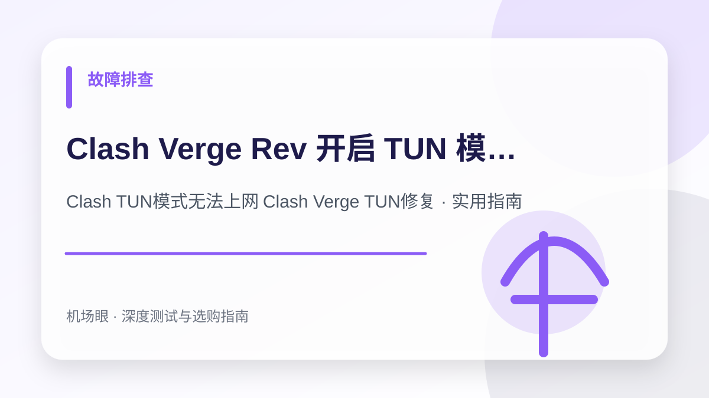

故障排查 · 2026-10-14
Clash Verge Rev 开启 TUN 模式无法上网？虚拟网卡、DNS 污染与防火墙冲突排查全解
Clash Verge Rev 开启 TUN 模式无法上网？虚拟网卡、DNS 污染与防火墙冲突排查全解。针对Clash TUN模式无法上网 Clash Verge TUN修复提供深度选购与排障实战手册，涵盖架构对比、配置方案、避坑清单与故障排查技巧。
搜索“Clash TUN模式无法上网 Clash Verge TUN修复”时，真正需要解决的不是单纯寻找一个服务名称，而是建立一套从网络底层逻辑、成本模型、安全风控到实战配置的完整决策体系。本文面向遇到开启 TUN 模式后电脑全面断网、提示无网络连接、游戏无法联机或 UWP 应用报错的用户，为你深度拆解核心技术原理与实测避坑指南。
先给结论：选购与排障的核心要点
TUN 模式通过在操作系统内核建立虚拟网络适配器（Wintun）实现全局三层深度分流；无法上网往往并非节点问题，而是 Wintun 服务权限缺失、Fake-IP 缓存环路死锁、IPv6 泄漏拦截或杀毒软件防火墙误杀导致的。在实际网络环境中，任何节点的表现都会受到本地运营商网络、骨干网互联质量、客户端协议栈实现以及目标平台风控规则的综合制约。因此，不要盲从网上的单一测速截图，必须结合自身使用场景进行针对性验证。
为什么这个话题在 2026 年成为热搜刚需
传统的‘系统代理（System Proxy）’仅在应用层生效，很多终端命令行（CMD/PowerShell）、游戏客户端、UWP 应用与 Docker 容器根本不理会系统代理设置。TUN（TUNnel）模式通过虚拟网卡接管系统全部网络流量，是目前最完美的全局加速手段。但正因为其深入内核网络栈，系统权限、DNS 解析模式与防火墙规则只要有一处冲突，就会立即导致整机‘彻底断网’，这是 2026 年 Clash 用户最常搜索的高频技术故障。
典型应用场景与决策依据
例如用户在 Windows 11 上安装了 Clash Verge Rev，点击开启 TUN 模式后，系统托盘右下角网络图标立即变成小地球（无 Internet 访问），微信断连、网页无法加载；关掉 TUN 后网页恢复，但 Steam 游戏又连不上。通过检查 Wintun 驱动服务状态并调整 DNS 协议栈为 gVisor，即可在 3 分钟内彻底修复并恢复高速代理。
TUN 模式无法上网的 4 阶排查定位表
| 故障层级 | 典型错误表现 | 核心底层诱因 | 一键解决路径 |
|---|---|---|---|
| 驱动层故障 | 开关无法打开，提示 Service Error | Wintun.dll 缺失或服务无管理员权限 | 设置中安装/重启 Service 模式 |
| DNS 协议栈 | 网络图标小地球，网页打不开但能 Ping 通 | Fake-IP 模式与系统 DNS 环路竞争 | 调整 stack 为 gVisor 或 Mixed |
| 防火墙误拦截 | 开启 TUN 瞬间所有出站数据包归零 | Windows Defender / 火绒拦截虚拟网卡 | 添加 Clash 内核至防火墙出入站白名单 |
| IPv6 绕行冲突 | 国内正常但海外网站报连接超时 | 运营商 IPv6 优先抢占导致流量逃逸 | 关闭本地网卡 IPv6 或开启 strict-route |
深度修复步骤：解决 TUN 模式断网的四步曲
步骤一：安装并授权内核“服务模式（Service Mode）”
TUN 模式接管网卡需要 Windows 底层特权。普通权限启动的 Clash 即使打开 TUN 开关，内核驱动也无法正常握手：
- 打开 Clash Verge Rev，进入左侧 「设置 (Settings)」 页面；
- 找到 「服务模式 (Service Mode)」，点击右侧的 「安装 (Install)」；
- 系统弹出 UAC 提权确认框时，点击 「是」；
- 安装成功后，服务模式右侧图标将显示为绿色小盾牌，此时再重新打开 TUN 模式。
步骤二：修改 DNS 协议栈（Stack）为 gVisor 或 Mixed
Windows 默认的 System 协议栈对虚拟网卡的数据包重组存在严重的兼容性缺陷，极易引发死锁：
# 在 Clash Verge 配置覆盖或配置扩展中添加：
dns:
enable: true
enhanced-mode: fake-ip
nameserver:
- 223.5.5.5
- 119.29.29.29
tun:
enable: true
stack: gvisor # 关键点：将 system 改为 gvisor 或 mixed，杜绝 Windows 驱动冲突
dns-hijack:
- "any:53"
auto-route: true
auto-detect-interface: true步骤三：彻底重置系统套接字与刷新 DNS 缓存
若先前异常退出导致网卡路由表残留死锁，可通过管理员身份运行 PowerShell 执行以下指令：
# 管理员运行 PowerShell 逐行粘贴回车：
netsh winsock reset
netsh int ip reset
ipconfig /flushdns执行完毕后重启电脑，重新启动 Clash Verge 即可彻底恢复正常。
选购与实测需要关注的四个核心指标
- Clash Verge 必须开启‘服务模式 (Service Mode)’并获取管理员绿色标识
- TUN 虚拟网卡属性中已正确分配 198.18.0.1 等 Fake-IP 网关地址
- 协议栈配置推荐选用 gVisor 或 Mixed，规避 Windows 默认网络栈冲突
- 系统防火墙必须允许 clash-meta-alpha.exe / mihomo.exe 的所有出站流量
推荐的标准化实操流程
- 进入 Clash 设置界面，检查服务模式是否安装且显示为绿色激活状态
- 在配置中将 TUN stack 选项从 system 调整为 gvisor，降低网卡握手失败率
- 如果开启了本地 IPv6，在 TUN 设置中开启 strict-route 或临时关闭本地 IPv6
- 若仍无网络，以管理员权限打开终端运行 netsh winsock reset 并重启系统
最常见的四个认知误区与避坑建议
- 没有安装服务模式就在普通权限下盲目硬开 TUN 模式
- 同时开启第三方杀毒软件的网络防护过滤，导致虚拟网卡被直接掐断
- 在 TUN 开启状态下直接强制拔掉网线或强制关机，导致网关路由残留
- 误将 Fake-IP 过滤名单清空，导致微信、钉钉等国内即时通讯产生环路延迟
常见问题深度解答 (FAQ)
开了 TUN 模式，为什么同时还需要开‘系统代理’吗？
不需要！TUN 模式工作在更底层的三层（IP层），已经捕获了全系统所有应用流量。如果同时开启系统代理，部分浏览器会走两道过滤，反而容易出现冲突或延迟升高。建议开启 TUN 模式后关闭系统代理。
开启 TUN 模式打外服游戏（如 CS2、Apex、GTA5）有延迟降低效果吗？
会有明显改善！很多游戏客户端本身不支持系统代理，之前只能直连海外服务器；开启 TUN 模式后游戏 UDP/TCP 数据包均可被专线节点接管，丢包率大幅下降，并能将 NAT 类型改善为 Open。
为什么开启 TUN 后可以看外网，但电脑右下角总显示‘无 Internet 访问’的地球图标？
这是因为 Windows 系统默认使用 msftconnecttest.com 进行连通性探测，该探测域名可能被代理策略拦截。只要网页和游戏能正常使用即可忽略；也可以在 Clash 规则中将该探测域名加入 DIRECT 直连列表。
总结与下一步建议
面对日益复杂的网络监管环境与海外平台风控策略，Clash TUN模式无法上网 Clash Verge TUN修复的关键在于回归需求本质——不要试图用单一廉价方案解决所有问题。合理建立“主力专线 + 备用容灾 + 协议分流”的弹性架构，才能在多变的环境中获得长期稳定体验。